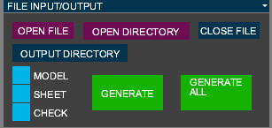
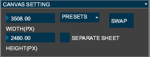
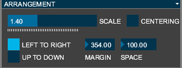
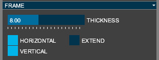
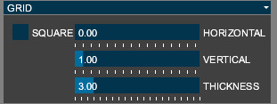
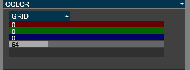
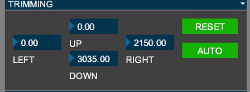
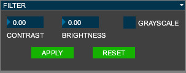

MoshaGenの使い方（詳細）
FILE INPUT/OUTPUTパネル

OPEN FILE
模写したい画像ファイルを開きます。
OPEN DIRECTORY
ディレクトリ内の全ての画像ファイルを読み込みます。
CLOSE FILE
画像ファイルを閉じます。
OUTPUT DIRECTORY
生成するファイルの置き場所を指定します。指定しない場合、読み込んだのと同じ場所に生成します。
MODEL,SHEET,CHECK
MODEL(お手本)、SHEET(ワークシート)、CHECK（答え合わせシート）を、チェックをつけると生成し、はずすと生成しなくなります。
GENERATE
お手本・ワークシート・答え合わせシートを生成します。
GENERATE ALL
開かれている全てのファイルについて、お手本・ワークシート・答え合わせシートを生成します。
CANVAS SETTINGパネル

WIDTH(PX), HEIGHT(PX)
生成する画像のサイズをピクセルで指定します。PRESETSから既定のサイズを選ぶこともできます。
SWAP
画像サイズの縦と横を入れ替えます。
SEPARATE SHEET
チェックをつけるとお手本とワークシートが別になり、はずすと一つのファイルの中にお手本とワークシートが入ります。
ARRANGEMENTパネル

SCALE
お手本に対するワークシート・答え合わせシートの倍率です。1にすると同じサイズで模写できます。1より大きくすると拡大して模写することになります。
CENTERING
チェックすると用紙の真ん中に画像が配置されます。
LEFT TO RIGHT, UP TO DOWN(SEPARATE SHEETチェック時のみ)
お手本とワークシートを左右に配置するか、上下に配置するかを設定できます。
MARGIN
画像の周りの余白です。
SPACE(SEPARATE SHEETチェック時のみ)
お手本とワークシートの間の間隔です。
FRAMEパネル

THICKNESS
枠の太さです。
HORIZONTAL, VERTICAL
水平・垂直方向の枠が、チェックすると付き、チェックをはずすと付かなくなります。
EXTEND
枠を端まで伸ばします。HORIZONTAL,VERTICALの一方のみをチェックし、EXTENDにチェックを入れると、水平・あるいは垂直方向の拡大率のみを頼りに模写することができます。
GRIDパネル

SQUARE, SIZE
SQUAREにチェックを入れると正方形のグリッドになります。SIZEで一辺の大きさを指定できます。
HORIZONTAL, VERTICAL(SQUAREにチェックしていないときのみ)
水平・垂直方向に入れるグリッド線の本数です。
THICKNESS
グリッド線の太さです。
COLORパネル

プルダウンメニューかだFRAME（枠）, GRID（グリッド）, BACKGROUND（背景）を選び、RGBAで色を設定してください。
TRIMMINGパネル

UP, DOWN, LEFT, RIGHT
上下左右をトリミングする量をピクセルで指定します。
RESET
UP, DOWN, LEFT, RIGHTをリセットし、トリミングしない状態にします。
AUTO
自動でトリミングします。
FILTERパネル

【注意】この項目はAPPLYを押すまで反映されません。
CONTRAST
コントラストを調整します。
BRIGHTNESS
明るさを調整します。
GRAYSCALE
チェックするとグレースケールになります。
APPLY
上記を適用します。
RESET
効果をリセットします。